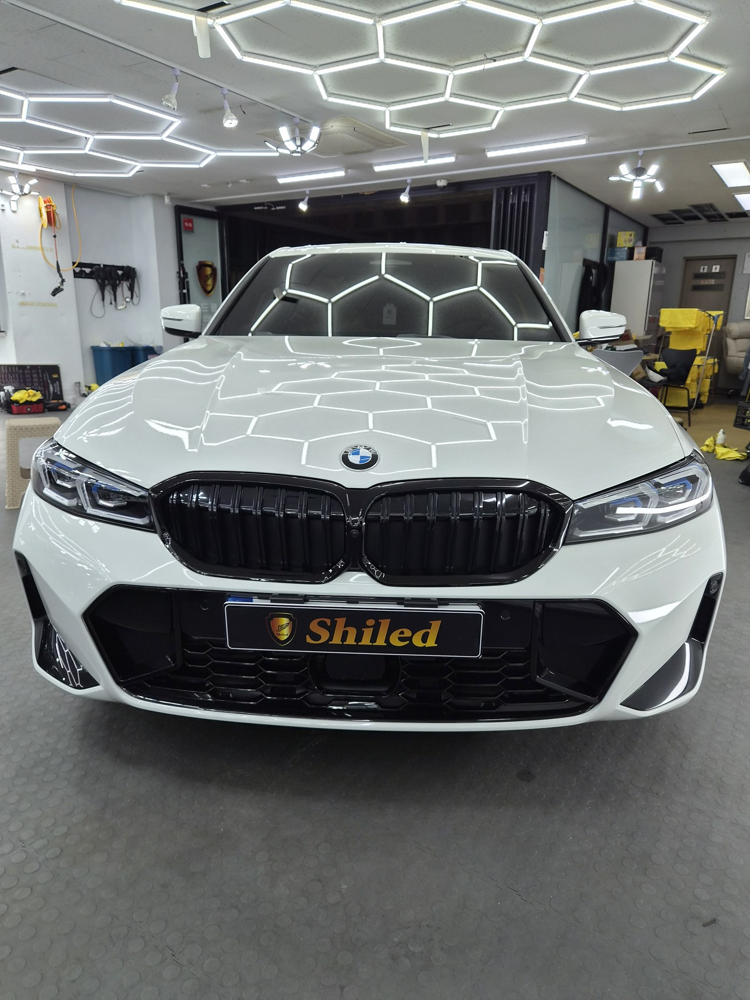
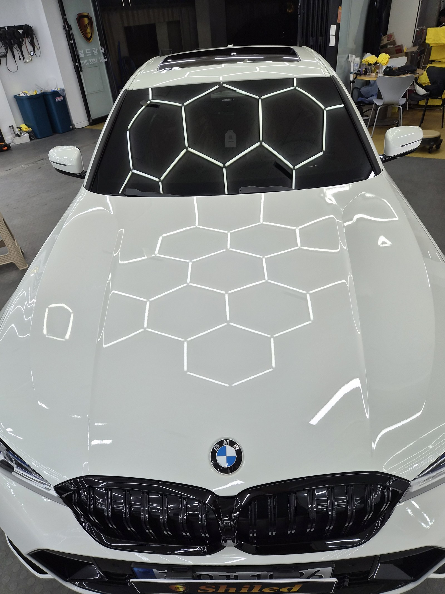
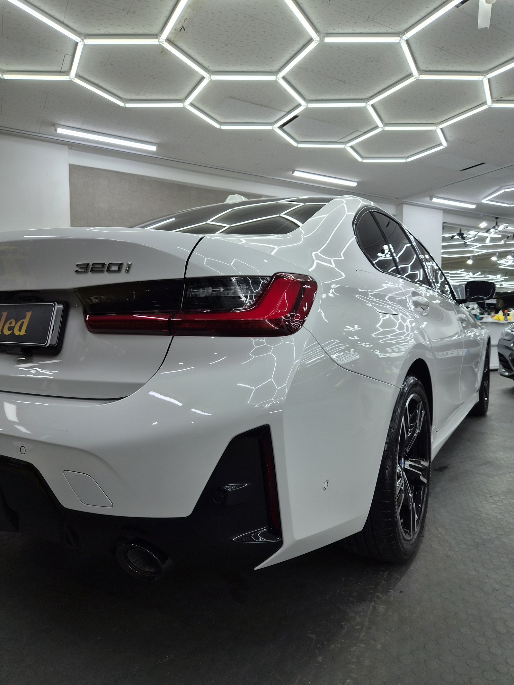
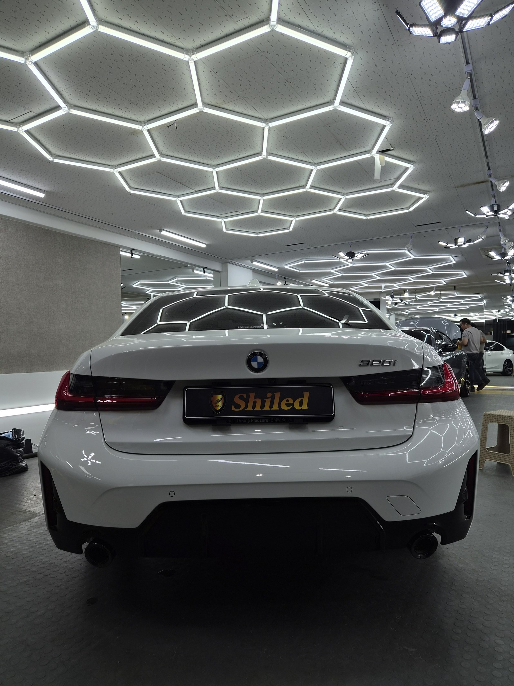
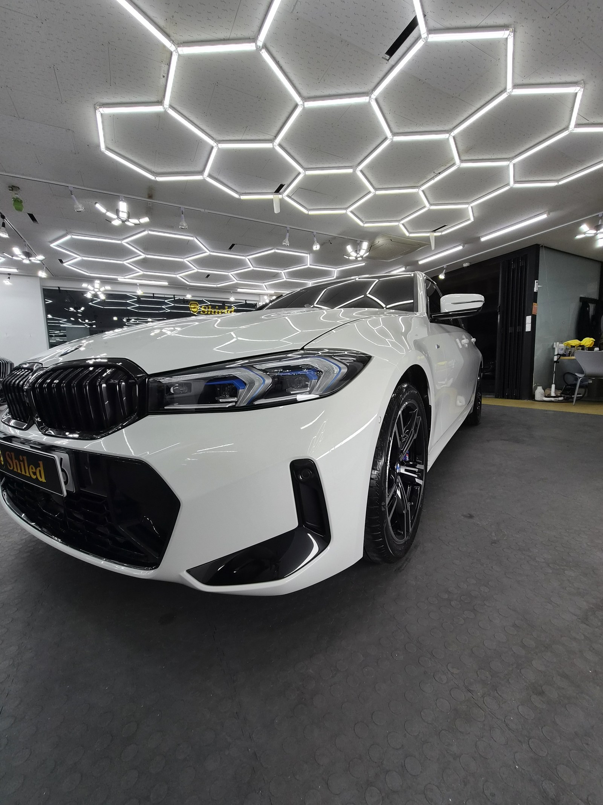

BMW 320i 백색입니다. 아직 출고 전, 새 차입니다.
부산 신차 유리막코팅으로 G-PRO를 올렸습니다.

새 차인데 왜 출고 전에 코팅을 하나
도장면이 가장 깨끗할 때 올리는 코팅이 가장 오래갑니다.
출고 후에는 운행과 세차로 미세한 잔기스와 오염이 쌓이기 시작합니다. 그게 쌓이기 전, 신차 상태 그대로일 때 코팅막을 입혀두는 겁니다. 부산 신차 유리막코팅 작업 중에서도 320i처럼 실사용 빈도가 높은 세단은 출고 전 시공 문의가 많습니다.

백색 320i에 왜 G-PRO인가
G-PRO는 경도를 높여 스크래치 내성을 강화하는 하드코팅입니다.
실사용 세단일수록 세차 습관이나 주차 환경에서 잔기스가 생기기 쉽습니다. G-PRO를 올리면 도장면 표면이 단단해져 그런 잔기스로부터 도장면을 지켜줍니다. 위 사진 보닛 위로 매장 조명 라인이 왜곡 없이 매끈하게 뻗어 있는 게 코팅막이 고르게 올라간 증거입니다. 코팅제는 대표가 화학공학 전공으로 직접 개발·제조한 제품입니다.
기술자의 팁
신차라고 바로 코팅을 올리지 않습니다. 운송·전시 과정에서 묻은 미세 오염을 디테일링 세차와 탈지로 걷어낸 뒤에 올립니다. 깨끗한 바탕 위에 올려야 코팅이 제대로 밀착합니다.


테일램프 라인까지 매끈하게
후면부는 코팅막이 제대로 올라갔는지 가장 잘 드러나는 자리입니다.
테일램프와 트렁크 리드 사이 굴곡에서 조명이 갈라지지 않고 매끈하게 이어져야 정상입니다. 범퍼 하단까지 코팅을 꼼꼼히 올려 하부까지 스크래치 내성을 확보했습니다.

시공증명서를 함께 드립니다
모든 시공 차량에 시공증명서를 드립니다.
차종·시공일·코팅제 시리얼 번호가 적혀 있고, 홈페이지에 등록해 보증을 받으실 수 있습니다. 이 차는 G-PRO 코팅으로 기록돼 있습니다.
차종·시공일·코팅제 시리얼이 기재된 시공증명서
자주 묻는 질문
Q. 부산 신차 유리막코팅, 320i도 출고 전 시공이 필요한가요?
A. 필요합니다. 도장면이 가장 깨끗한 시점은 출고 직후입니다. 운행·세차가 시작되면 잔기스와 오염이 쌓이기 시작하는데, 그 전에 코팅막을 입혀두면 신차 상태를 훨씬 오래 지킬 수 있습니다.
Q. 백색 320i에는 왜 G-PRO를 올렸나요?
A. G-PRO는 경도를 높여 스크래치 내성을 강화하는 하드코팅입니다. 세차 습관이나 주차 환경에서 생기는 잔기스로부터 도장면을 보호하고 싶은 차주에게 추천하는 코팅입니다.
Q. 유리막코팅과 광택은 뭐가 다른가요?
A. 광택은 도장면 표면의 스월·잔기스를 연마해 평탄하게 만드는 작업이고, 유리막코팅은 그 위에 유리질 보호막을 입혀 오염과 스크래치로부터 도장면을 지키는 작업입니다. 신차는 보통 광택 없이 코팅만으로도 충분한 경우가 많습니다.
Q. 신차코팅도 전처리를 하나요?
A. 합니다. 신차라도 운송과 전시 과정에서 미세 오염이 묻습니다. 디테일링 세차와 탈지로 표면을 정리한 뒤 코팅을 올려야 코팅막이 도장면에 제대로 밀착합니다.
Q. 쉴드광택 위치와 예약은 어떻게 하나요?
A. 부산 남구 유엔로220 1F 쉴드광택입니다. 예약·상담은 010-3384-1850, 대표 최한중이 직접 상담하고 책임 시공합니다.
새 차일수록 시작점이 다릅니다. 가장 깨끗할 때 입혀두십시오.
제품을 직접 만드는 사람이 직접 시공합니다.
부산에서 신차 유리막코팅을 고민 중이시면 편하게 연락 주십시오.
어떤 차를 타냐보다 어떻게 타냐가 중요합니다~!
📞 010-3384-1850 견적 문의쉴드광택 · 부산 남구 유엔로220 1F · 대표 최한중